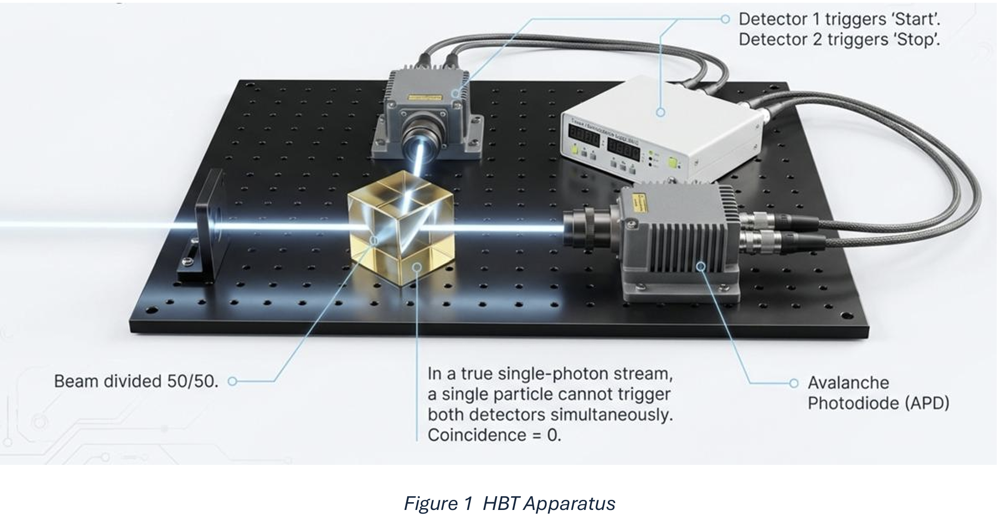
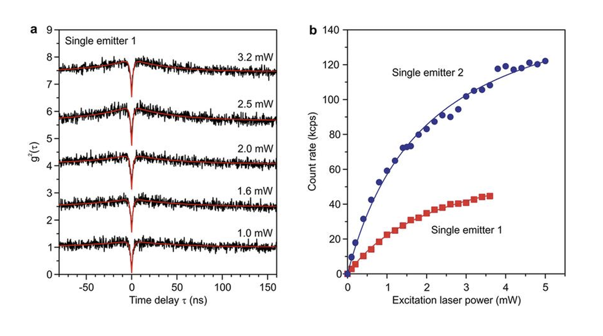

A quantum device emitting light as individual, indivisible particles — a Fock state \(|1\rangle\) with \(\langle n \rangle = 1\) and \(\operatorname{Var}(n) = 0\).
Unlike classical coherent lasers governed by Poissonian statistics, an ideal SPS generates a Fock state \(|1\rangle\) with \(\langle n \rangle = 1\) and \(\operatorname{Var}(n) = 0\). Photonic qubits encoded in polarization or momentum travel at \(c\), interact weakly with the environment, and are manipulable with linear optics — making them ideal carriers of quantum information.
Each pulse produces \(|1\rangle\) — exactly one photon. The photon-number variance is strictly zero, fundamentally unlike any classical coherent or thermal source.
QKD requires true single photons. Multi-photon pulses break the no-cloning guarantee underpinning BB84. The BB84 protocol encodes bits in orthogonal polarization states of single photons.
Quantum repeaters overcome the \(0.2\,\text{dB/km}\) fibre loss limit via entanglement swapping across short segments. The No-Cloning Theorem forbids classical amplification of quantum signals.
Classical light obeys \(g^{(2)}(0) \geq 1\). True single-photon emission produces photon antibunching: \(g^{(2)}(0) = 0\), the gold standard for a perfect SPS.
A 50/50 beam splitter divides the photon stream toward two avalanche photodiode (APD) detectors. An indivisible photon cannot fire both simultaneously — the coincidence count at \(\tau = 0\) collapses to zero. This is quantified by the second-order correlation function:

Figure 1 — HBT apparatus. The beam is divided 50/50; in a true single-photon stream a single particle cannot trigger both detectors simultaneously. Coincidence = 0.
Two fundamental approaches to generating single photons, each with distinct physical mechanisms and \(g^{(2)}(0)\) performance trade-offs.
Spontaneous Parametric Down-Conversion uses a pump photon in a non-linear crystal (e.g. BBO) to generate correlated signal/idler pairs. The idler heralds the signal, but low pump power is required to suppress multi-pair events — preventing truly on-demand operation.
Nitrogen-Vacancy lattice defects act as isolated two-level systems. Photostable (no blinking) and operable at room temperature. Emission is Purcell-enhanced into a usable waveguide mode by embedding in a photonic crystal cavity.
Nano-scale semiconductor islands emit one photon per exciton recombination. Purcell-enhanced emission into photonic crystal slabs enables high brightness. Requires cryogenic operation at \(\approx 4\,\text{K}\).
Superconducting Nanowire SPDs deliver timing jitter below 50 ps with negligible dark counts. Transition-Edge Sensors resolve photon number at \(\sim 95\%\) detection efficiency, at the cost of slow response and sub-4 K cooling.
Experimental validation of single-photon emission via the antibunching dip in \(g^{(2)}(\tau)\), alongside saturation behaviour of count rate with excitation power for two single emitters.

Left (a): \(g^{(2)}(\tau)\) vs time delay \(\tau\,(\text{ns})\) for Single emitter 1 at pump powers 1.0–3.2 mW. A pronounced dip at \(\tau = 0\) confirms antibunching \((g^{(2)}(0) < 1)\) — a non-classical light signature.
Right (b): Detected count rate (kcps) vs excitation laser power (mW) for two emitters. Both curves follow the two-level saturation model
\(R(P) = R_\infty \cdot \dfrac{P/P_\text{sat}}{1 + P/P_\text{sat}}\),
balancing source purity against on-demand efficiency. Single emitter 2 achieves significantly higher saturation count rates, consistent with a stronger Purcell enhancement.
Interactive Experience
A quantum dot SPS modelled via the HBT interferometer. Observe \(g^{(2)}(0)\) as parameters are adjusted in real time.